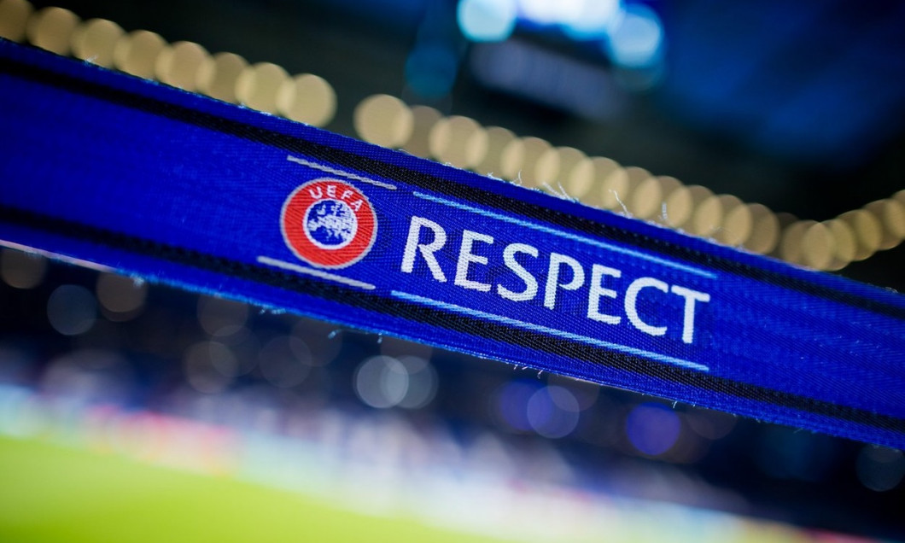

UEFA a venit cu o precizare, după ce a dat verdictul pentru România - Kosovo: ”Rețineți”
UEFA a venit cu o precizare, după ce a decis ca România să câștige cu 3-0 la ”masa verde” meciul abandonat de Kosovo, la București, în minutul 90+5, din cadrul Grupei C2 a Ligii Națiunilor.
Citeste mai mult dand click aici
Publicat acum ore

Naționala de handbal feminin a României, învinsă la scor de Olanda, cu câteva zile înaintea debutului la Campionatul European
Naționala de handbal feminin a României a pierdut clar meciul cu Olanda, 26-41, la Golden League, turneu premergător Campionatului European, care debutează peste opt zile, în direct la Digi Sport.
Citeste mai mult dand click aici
Publicat acum ore

EURO 2019 U21. România a învins Anglia cu 4-2. Pas pentru calificarea în semifinale
Naționala de tineret a României a făcut un pas important pentru calificarea în semifinalele EURO 2019 după victoria spectaculoasă în fața Angliei: 4-2. România U21 este pe pirmul loc în grupă, cu 6 puncte. Clasamentul grupei C:
Citeste mai mult dand click aici
Publicat acum ore